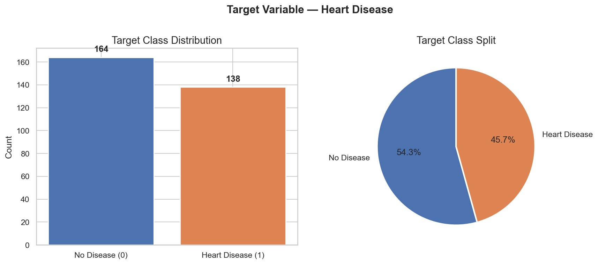
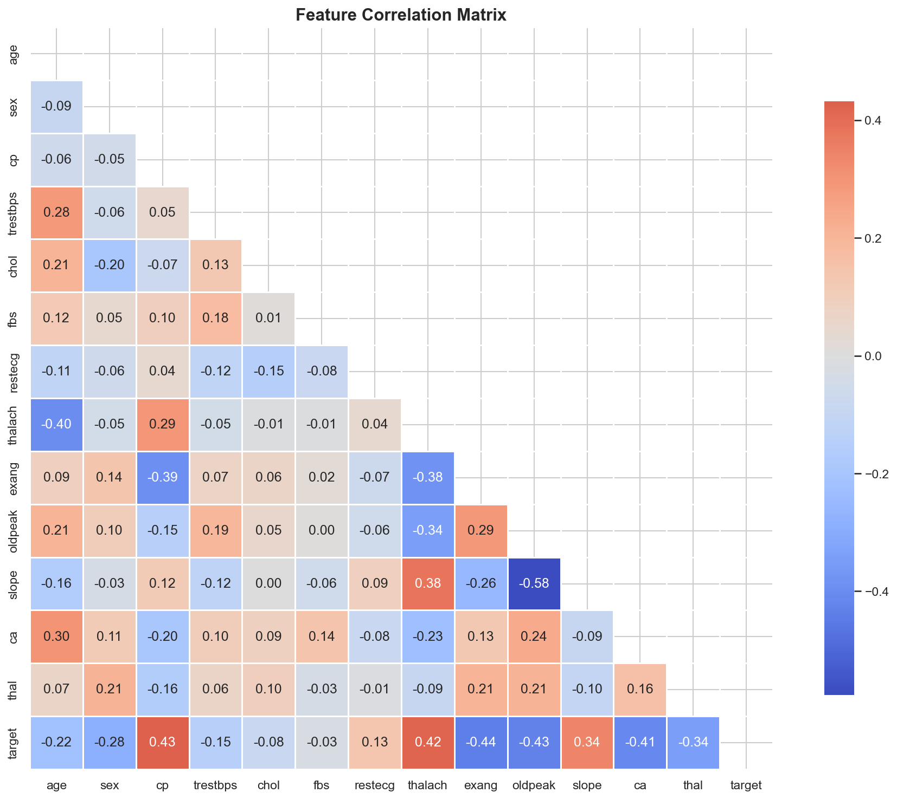
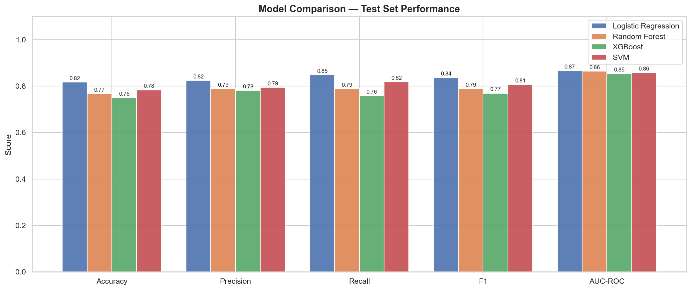
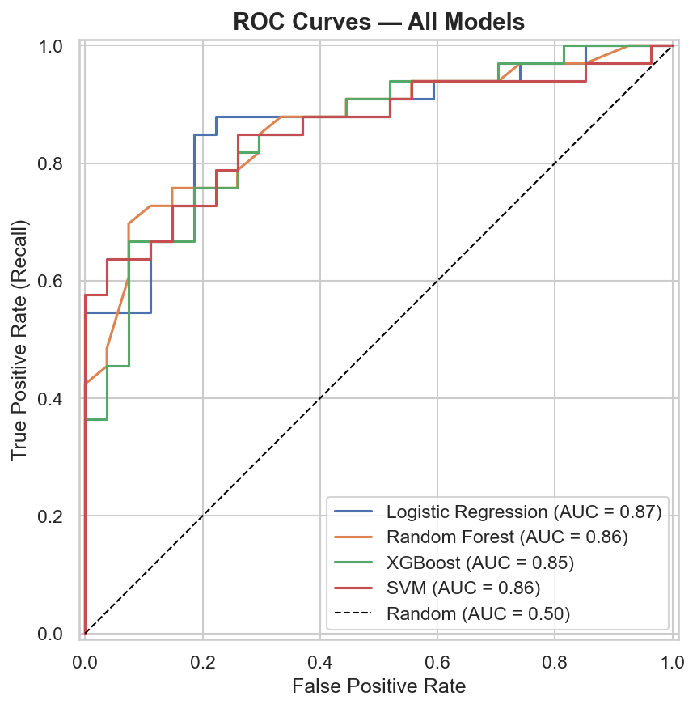
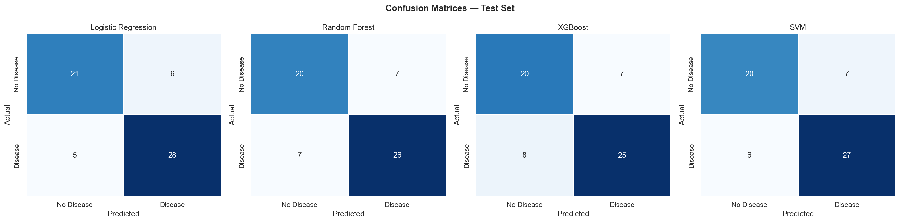
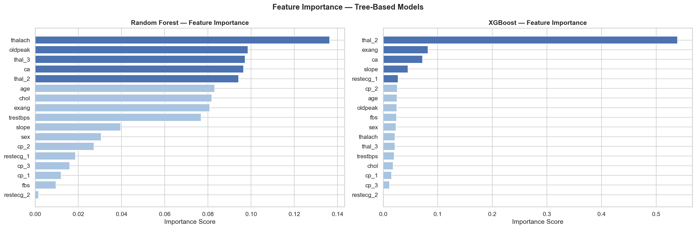
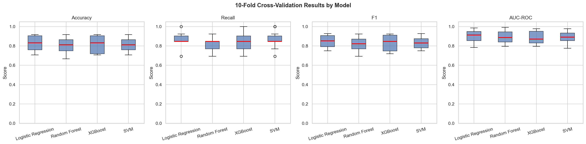
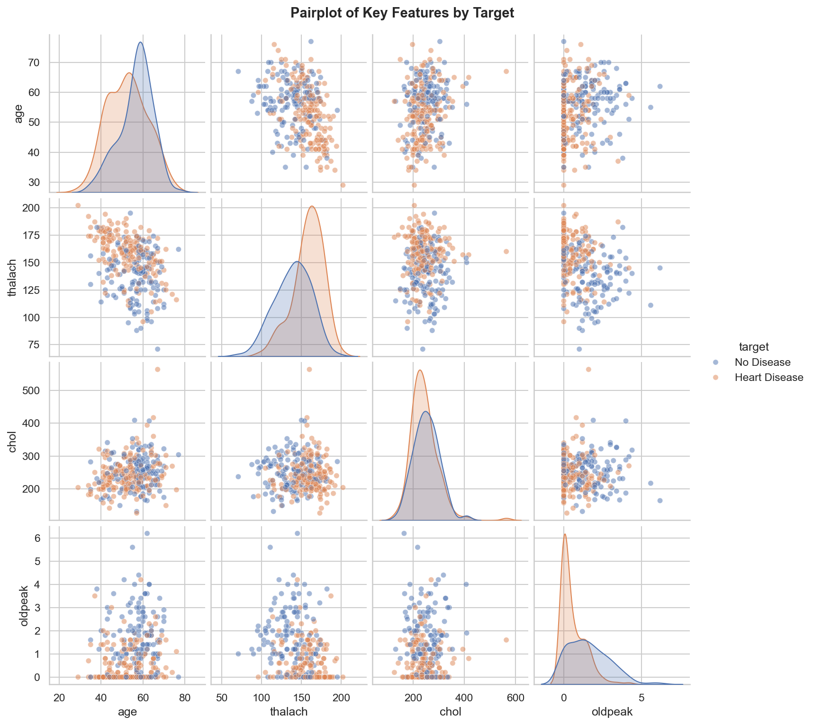
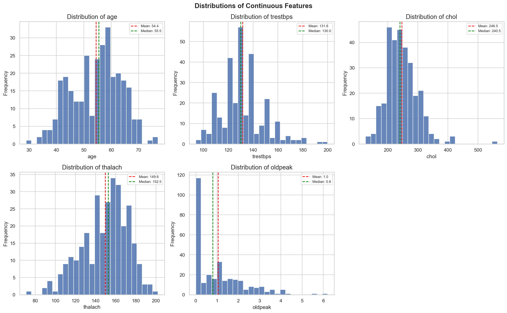

Predicting the presence of heart disease from clinical patient data using Logistic Regression, Random Forest, XGBoost and SVM.
Analysed distributions, correlations, and class balance across 13 clinical features. Identified 723 duplicate rows and key outliers.
Removed duplicates, winsorized outliers, applied log1p transform to oldpeak, one-hot encoded categoricals, and scaled features.
Trained 4 classifiers with 10-fold stratified cross-validation. Selected best model based on Recall as the primary clinical metric.
Deep analysis of best model: confusion matrix, ROC curve, Precision-Recall curve, threshold analysis, and coefficient interpretation.
| Model | Accuracy | Precision | Recall | F1 | AUC-ROC |
|---|---|---|---|---|---|
| Logistic Regression | 0.820 | 0.820 | 0.850 | 0.840 | 0.870 |
| SVM | 0.780 | 0.790 | 0.820 | 0.810 | 0.860 |
| Random Forest | 0.770 | 0.790 | 0.790 | 0.790 | 0.860 |
| XGBoost | 0.750 | 0.780 | 0.760 | 0.770 | 0.850 |
✓ Best model selected on Recall — minimising missed disease cases is the primary clinical priority. Logistic Regression also offers full interpretability via coefficients.
Strongest positive predictor. Asymptomatic patients had the highest disease rate (~70%) despite having no pain — a counterintuitive but clinically significant finding.
Heart disease patients achieved higher max heart rates. This feature showed the clearest class separation in both histograms and the pairplot.
Strongest negative predictor. Over 75% of patients with exercise-induced angina had no heart disease, making it a strong protective signal.
Disease patients clustered near 0. Feature showed heavy right skew — a log1p transformation was applied in preprocessing to reduce skewness.
Patients with 0 coloured vessels had the highest disease rate (~75%). Risk decreased consistently as vessel count increased.
Over 70% of the raw dataset was duplicated. Removing them reduced the dataset from 1,025 to 302 rows — a key preprocessing discovery with major implications for model reliability.








